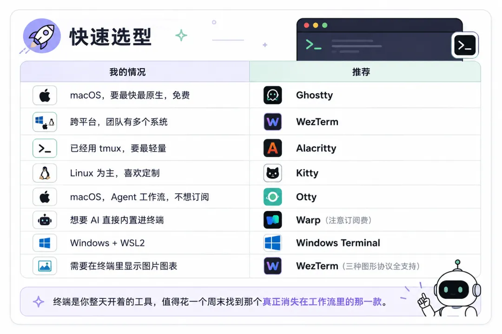

Desarrolla con Claude Code, Codex CLI y OpenCode; estas herramientas se ejecutan en la terminal.
Mucha gente lo instala y lo usa directamente, todavía con la Terminal.app integrada de macOS o cmd en Windows. Funciona sin problemas, pero si abres cuatro o cinco paneles a la vez —uno con Claude Code, otro con el servidor de desarrollo, otro viendo logs y otro ejecutando pruebas— la terminal predeterminada del sistema no puede con ello, y el atasco es evidente cuando la IA genera grandes bloques de contenido.
La terminal es una de las herramientas que más tiempo tienes abierta cada día; vale la pena elegir una con cuidado.

Antes de elegir, conoce estas dimensiones clave:
- Renderizado por GPU — Cuando Claude Code genera cientos de líneas de código en streaming o los logs se desplazan a gran velocidad, el renderizado por CPU se atasca, pero el de GPU no. Es prácticamente estándar en las terminales modernas.
- Protocolos gráficos — Las herramientas de IA producen cada vez más imágenes, gráficos y diffs renderizados; la terminal debe soportar los protocolos Kitty / Sixel / iTerm2 para mostrarlos correctamente.
- Configuración como código — Los archivos de configuración pueden gestionarse con Git; restaura tu entorno en segundos al cambiar de ordenador y mantén la consistencia entre varias máquinas.
- IA integrada — La terminal incluye sugerencias de comandos y explicación de errores con IA (Warp es la más profunda), o bien se integra mediante plugins de shell como gh copilot, Amazon Q, aichat, etc.
- Multiplexación — Gestiona varios paneles y sesiones a la vez. WezTerm lo trae integrado; otras terminales se combinan con zellij (recomendado para principiantes) o tmux.
- Soporte de ligaduras tipográficas — Con fuentes de programación como Fira Code o JetBrains Mono, != se muestra como ≠, mejorando la legibilidad del código.

Clasificadas por escenario de uso, 34 en total
Exclusivo para macOS/ 3
Aceleración GPU multiplataforma/ 8
Configuración programable en Lua, multiplexor integrado, soporta tres protocolos gráficos
Gratuito y de código abierto
Protocolo gráfico propio + plugins kittens, la elección de los geeks de Linux
Gratuito y de código abierto
Terminal de nueva generación con Rust + renderizado WebGPU
Gratuito y de código abierto
Construido con GTK4, integrado en el lenguaje visual de GNOME
Gratuito y de código abierto
Windows / WSL / 3
Incluido en el escritorio Linux/ 9
SSH / Administración remota/ 8
Cliente SSH multiplataforma, sincronización escritorio + móvil
Gratuito + suscripción premium
Suite de administración remota todo en uno para Windows
Versión gratuita + versión profesional
Creado por un equipo chino, gestión masiva de servidores
Versión gratuita + versión de pago